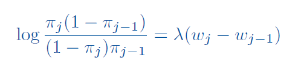
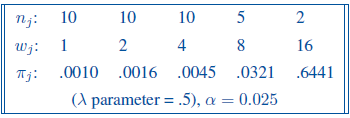
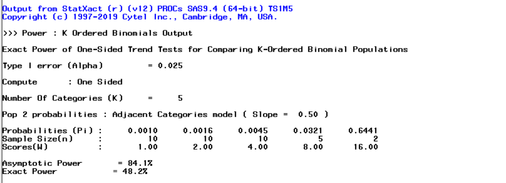
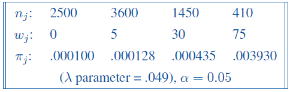
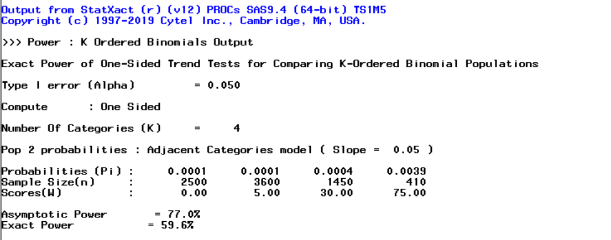
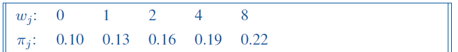
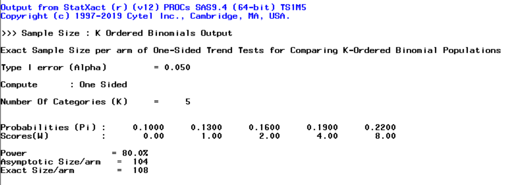

Sample size for K ordered binomial populations - Cochran-Armitage trend test
Cochran-Armitage trend test
Cochran-Armitage trend test (Cochran-Armitage Z-test) is used to check if there is a trend in proportions across levels of a categorical, ordered variable. It’s mostly used to analyse data where one variable is a binomial and the other is an ordinal variable. Basically, the test checks if the proportions vary in a specific direction (increasing or decreasing) when the ordered variable changes.
In the examples below we will calculate the extract and asymptotic powers and sample size of the Cochran-Armitage trend test. Analysis is not available in SAS and need to be run in StatXact PROC (module to SAS from Cytel).
The below parameters are need for the calculations:
- ω_i - dose level/exposure for he i-th group
- n_i - number of subjects in i-th group
- π_1 - baseline response probability
- π_i - response (binomial) probability for i-th group
- λ (lambda) - slope for the logit model, can be interpreted as change in the log-odds of response per unit increase in dose
- α - significance level for one-sided trend test
- β - required power
In StatXact we can directly specify all of the response probabilities, or we can specify the baseline probability and use the below logit model with prespecified slope lambda to derive the rest:
Example 1 - Power for dose finding pilot study
Let’s consider an example of a dose-finding phase I clinical trial of patients with advanced chronic disease. At the lowest dose level the response probability is known to be 0.001. The drug will be considered useful if the log odds of response increase by 0.5 per unit increase in dose (that defines the lambda). The study design assumes doubling the dose up to maximum of 16 units. Sample sizes of 10, 10, 10, 5 and 2, are proposed for the five dose levels, to restrict the total number of subjects at the two highest dose levels due to possible side effects. A one-sided Cochran-Armitage trend test at the 2.5% significance level will performed at the end of the study. What is the power?
Design parameter are as below:

SAS code:
proc sxpowerbin;
tr/ex;
palpha 0.025;
k 5;
H0 0.001;
H1 logodds /val=0.5;
scores 1 2 4 8 16;
size1 10;
size2 10;
size3 10;
size4 5;
size5 2;
run;Output from StatXact and results:

The exact power is 48%, whilst the asymptotic power is 84%. Here, using the asymptotic power would have led to a false sense of security concerning the adequacy of the proposed sample sizes for carrying out this pilot study.
Example 2 - Power for cohort study of effects of low dose radiation
Let’s consider an example of a long-term follow-up study of subjects exposed to low-dose radiation in Japan (adapted from Landis, Heyman and Koch, 1978). The cohort was partitioned into four groups based on average radiation exposures of 0, 5, 30 and 75 rads. There were 2500, 3600, 1450 and 410 subjects, respectively, in the four dose groups. Subjects were classified as responders if they died from leukemia and non-responders if they died from other causes. We want detect a trend parameter of 0.049 on the logit scale, given a background response rate of 1 in 10,000. A one-sided Cochran-Armitage trend test at the 5% significance level was performed at the end of the study. What was the power?
Design parameter are as below:

SAS code:
proc sxpowerbin;
tr/ex dist_file=tr;
palpha 0.05;
k 4;
H0 0.0001;
H1 logodds /val=0.049;
scores 0 5 30 75;
size1 2500;
size2 3600;
size3 1450;
size4 410;
run;Output from StatXact and results:

Asymptotic power of the test is 77%, a considerable overestimate of the actual power, 60%.
Example 3 - Sample size calculation for trend test
Let’s consider an example of the study where the design parameters are as below:

What is the required sample size to achieve the power of 80% with the significance level 5%?
SAS code:
proc sxpowerbin ti =15;
tr/ex;
palpha 0.05;
beta 0.8;
k 5;
H0 0.10;
H1 user/val=0.13 0.16 0.19 0.22;
scores 0 1 2 4 8;
run;(option ti = 15 limits the maximum time of computation to 15 min)
Output from StatXact and results:

Sample size of 108 is needed to obtain the required power.
References
All of the examples are adapted from StatXact 12 PROCs Manual.